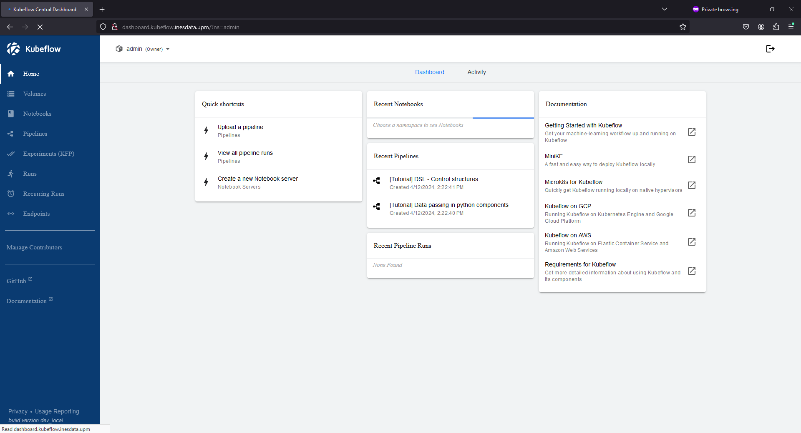
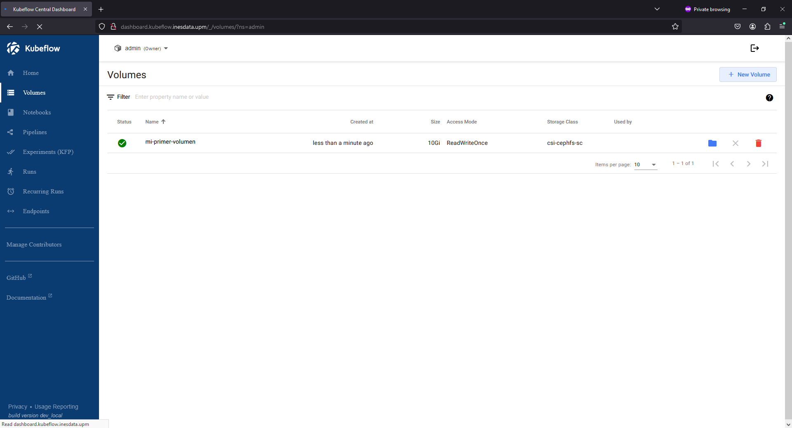
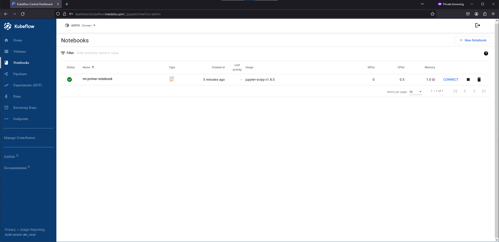
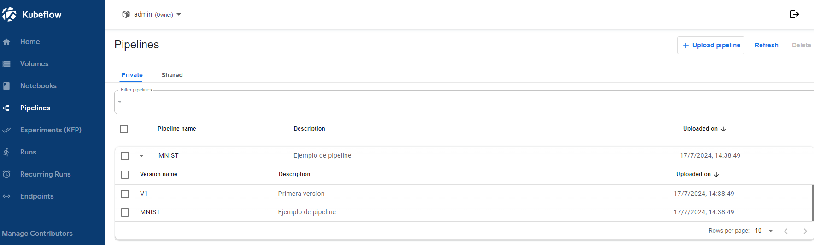
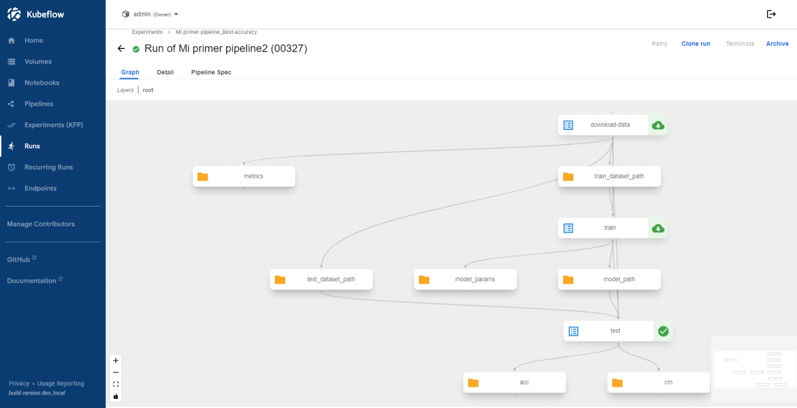

Introducción a la plataforma
La plataforma de desarrollo Inteligencia Artificial, Inesdata-AI-Services es una instancia customizada de kubeflow. El objetivo de esta guía no es entrar en detalle sobre kubeflow, para ello remitimos al lector a la guía oficial de kubeflow sino hacer una introducción a la misma, destacando los módulos principales.
La plataforma de Inesdata-AI-Services cuenta con los siguientes componentes:
- Central Dashboard. Es el panel central de Kubeflow que proporciona una interfaz web autenticada para el resto de componentes (ver abajo)
- Kubeflow Notebooks. Proporciona una manera de ejecutar entorno de desarrollo web dentro del clúster de Kubernetes ejecutándolos en forma de
Pods. Esta es el componente principal deInesdata-AI-Services. - Kubeflow Pipelines v2. Permite crear e implementar flujos (pipelines) escalables de Inteligencia Artificial usando contenedores
Docker - KServe Permite a "serverless" inferencia y de alto rendimiento usnado para los frameworks de desarrollo más comunes de IA como TensorFlow, PyTorch, Scikit-learn, ONNX, etc.
Acceso a la plataforma
A la plataforma se accede via web a través de la siguiente dirección web:
https://kubeflow.ai.inesdata-project.eu/
Esta dirección te redirigirá al proveedor de identidad implementado en Inesdata-AI-Services (Keycloak). Una vez autenticado, se redirigira al compomente Central Dashboard.
Componentes de la plataforma
Central Dashboard
Central Dashboard es el panel central de Kubeflow que proporciona una interfaz web autenticada para el resto de componentes. Este es el punto principal de entrada a la plataforma desde el cual puedes navegar al resto de componentes descritos en las siguientes secciones.

Volúmenes
Los volumenes permiten el almacenamiento de datos. Este es un componente muy importante ya que permite la persistencia de datos, y a su vez serán los que se usen en el resto de servicios/componentes tales como los notebooks o pipelines. Además, esta capacidad de persistencia permite que si los servicios de notebook se eliminan/paran, lo almacenado en estos volúmenes puede ser reutilizado en otras instancias.

Kubeflow Notebooks
Kubeflow Notebooks. Proporciona una manera de ejecutar entorno de desarrollo web dentro del clúster de Kubernetes ejecutándolos en forma de Pods. Esta es el componente principal de Inesdata-AI-Services.
Ver la sección ejemplos: Mi primer notebook, para ver un ejemplo detallado de cómo crear un notebook

Kubeflow Pipelines
Kubeflow Pipelines es un componente que ermite crear e implementar flujos (pipelines) escalables de Inteligencia Artificial usando contenedores Docker. Los pipelines permiten orquestar múltiples pasos de un proceso de aprendizaje automático, desde la preprocesamiento de datos hasta el entrenamiento y despliegue de modelos.
Los usuarios pueden crear, implementar y supervisar pipelines de manera eficiente, lo que facilita la replicación de resultados y la ejecución de experimentos a mayor escala. Además, Kubeflow Pipelines V2 ofrece mejoras en la gestión de metadatos y en la reutilización de componentes entre pipelines.
En la sección ejemplos: Mi primer pipeline se ofrece un ejemplo detallado de cómo crear y ejecutar un pipeline.
 
KServe
KServe permite una inferencia "serverless" y de alto rendimiento usando los frameworks de desarrollo más comunes de IA como TensorFlow, PyTorch, Scikit-learn, ONNX, entre otros. KServe facilita el despliegue de modelos en producción, proporcionando características como autoescalado, gestión de versiones y monitorización.
KServe integra capacidades avanzadas como la detección de deriva de datos y la validación de esquemas, asegurando que los modelos desplegados mantengan su rendimiento a lo largo del tiempo.
Para más detalles sobre cómo utilizar KServe, consulta la documentación oficial: KServe Documentation.